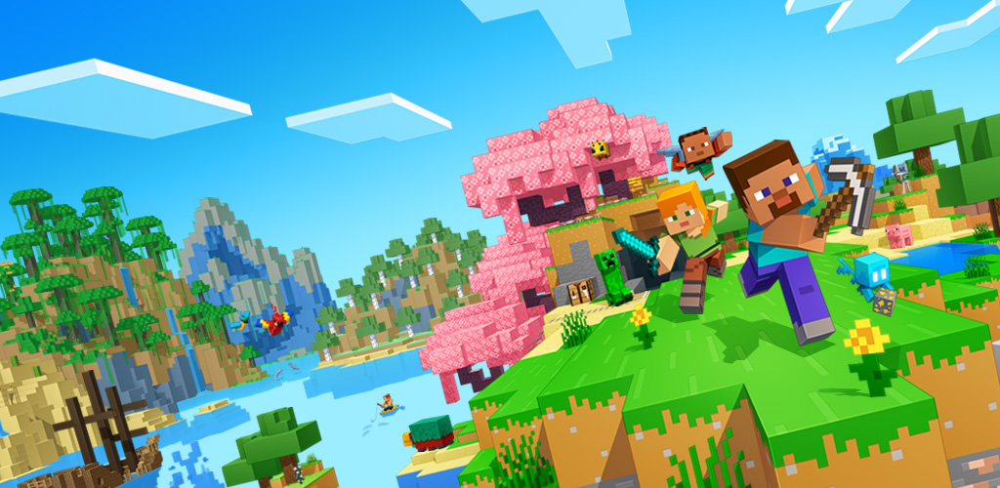

Portal de notícia de Jogos
Jogos

Minecraft é um dos jogos mais populares do mundo, conhecido por sua liberdade criativa. Nele, os jogadores
podem explorar mundos infinitos, coletar recursos e construir desde pequenas casas
até cidades gigantes. Além disso, o jogo tem modos de sobrevivência, aventura e criativo, permitindo que
cada pessoa jogue da forma que mais gosta. É também muito usado na educação,
por estimular a criatividade e o raciocínio lógico.
Esporte

Os esportes são atividades que unem saúde, diversão e competição. Eles ajudam a desenvolver o corpo,
fortalecem o espírito de equipe e promovem disciplina e superação. Seja no futebol, no vôlei, na corrida ou
na natação, praticar esportes é também uma forma de socializar e manter uma vida mais equilibrada.
Politica
A política é o conjunto de ações e decisões que organizam a vida em sociedade. Ela define regras, cria leis e
busca equilibrar interesses coletivos. É por meio da política que cidadãos participam das escolhas do país,
seja votando, debatendo ideias ou cobrando mudanças.